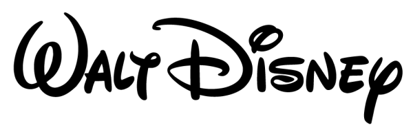
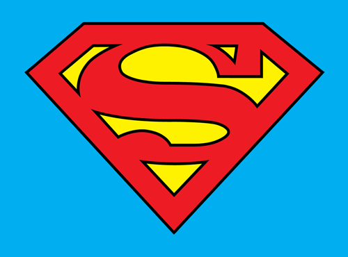
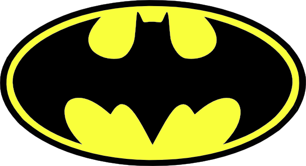

Image logo with default properties.
// Default - Javascript
var disney = document.getElementById('disney');
disney.src = '../logos/disney.png';
disney.onload = function () {
Loadgo.init(disney);
};

Image logo with opacity set to 0.2, without width transition when changing progress and background set to #01AEF0
// Opacity, no animation and background color - Javascript
var superman = document.getElementById('superman');
superman.src = '../logos/superman.png';
superman.onload = function () {
Loadgo.init(superman, {
'opacity': 0.2,
'animated': false,
'bgcolor': '#01AEF0'
});
};

Image logo is the original (in this case, Batman's logo with yellow background) and overlay image is the one with some filter, or other effect pretty similar to the original image logo (in this case, Batman's logo with white background).
// Overlay - Javascript
var batman = document.getElementById('batman');
batman.src = '../logos/batman.png';
batman.onload = function () {
Loadgo.init(batman, {
'opacity': 1,
'image': '../logos/batman-overlay.png'
});
};

Loading animation can be set from: left to right (lr), right to left (rl), bottom to top (bt) or top to bottom (tb).
// Left to Right - Javascript
var jurassiclr = document.getElementById('jurassiclr');
jurassiclr.src = '../logos/jurassic.png';
jurassiclr.onload = function () {
Loadgo.init(jurassiclr, {
'direction': 'lr'
});
};
// Right to Left - Javascript
var jurassicrl = document.getElementById('jurassicrl');
jurassicrl.src = '../logos/jurassic.png';
jurassicrl.onload = function () {
Loadgo.init(jurassicrl, {
'direction': 'rl'
});
};
// Bottom to Top - Javascript
var jurassicbt = document.getElementById('jurassicbt');
jurassicbt.src = '../logos/jurassic.png';
jurassicbt.onload = function () {
Loadgo.init(jurassicbt, {
'direction': 'bt'
});
};
// Top to Bottom - Javascript
var jurassictb = document.getElementById('jurassictb');
jurassictb.src = '../logos/jurassic.png';
jurassictb.onload = function () {
Loadgo.init(jurassictb, {
'direction': 'tb'
});
};
CSS3 image filters applied for progress instead of an overlay. Filters can be: sepia, blur, invert, hue-rotate, opacity or grayscale.
// Sepia - Javascript
var spidermanSepia = document.getElementById('spidermanSepia');
spidermanSepia.src = '../logos/spiderman.png';
spidermanSepia.onload = function () {
Loadgo.init(spidermanSepia, {
'filter': 'sepia'
});
};
// Blur - Javascript
var spidermanBlur = document.getElementById('spidermanBlur');
spidermanBlur.src = '../logos/spiderman.png';
spidermanBlur.onload = function () {
Loadgo.init(spidermanBlur, {
'filter': 'blur'
});
};
// Invert - Javascript
var spidermanInvert = document.getElementById('spidermanInvert');
spidermanInvert.src = '../logos/spiderman.png';
spidermanInvert.onload = function () {
Loadgo.init(spidermanInvert, {
'filter': 'invert'
});
};
// Hue Rotate - Javascript
var spidermanHue = document.getElementById('spidermanHue');
spidermanHue.src = '../logos/spiderman.png';
spidermanHue.onload = function () {
Loadgo.init(spidermanHue, {
'filter': 'hue-rotate'
});
};
// Opacity - Javascript
var spidermanOpacity = document.getElementById('spidermanOpacity');
spidermanOpacity.onload = function () {
Loadgo.init(spidermanOpacity, {
'filter': 'opacity'
});
};
// Grayscale - Javascript
var spidermanGrayscale = document.getElementById('spidermanGrayscale');
spidermanGrayscale.src = '../logos/spiderman.png';
spidermanGrayscale.onload = function () {
Loadgo.init(spidermanGrayscale, {
'filter': 'grayscale'
});
};